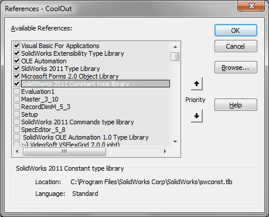

CoolOut |
Top Previous Next |
|
Предназначен для преобразования размеров, проставленных с помощью инструмента "Условное обозначение отверстия", к виду по ЕСКД. Не имеет окна. После простановки размера, необходимо его выделить и нажать кнопку макроса. Размер будет преобразован к нормальному однострочному виду. Повторное применение макроса преобразует запись размера к двустрочному виду. При этом сохранится связь с параметрами модели (диаметр, глубина и т.д.). Нарушение параметрической связи происходит только в отношении фасок, .т.к. солид задает фаски диаметром зенковки. Макрос имеет файл настроек - CoolOut.ini. В нем можно задать, к какому виду (однострочному или двустрочному) будет преобразован размер при первом применении макроса. Также можно определить режим выделения цветом размеров с фасками. Это сделано для того, чтобы отметить размеры, в которых разорвана параметрическая связь с моделью.
Библиотеки: 
|